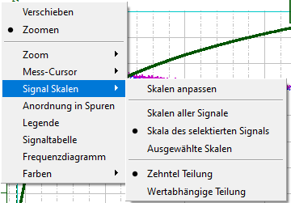

Das Kontextmenü "Signal Skalen" ist in einander ausschließende Gruppen gegliedert. Dabei schließen sich Zehntelunterteilung und Werteunterteilung als eine Gruppe gegenseitig aus und Skalen aller Signale, Skala des selektierten Signals und ausgewählte Skalen schließen sich als andere Optionsgruppe gegenseitig aus.
"Zehntel Teilung": Der Menüpunkt bedeutet, dass die Hauptteilstriche und die dazugehörigen Beschriftungen an vertikalen Skalierungen nur für Zahlen angezeigt werden, die ein Produkt des Faktors 10 sind. Beispiel: 10, 20, 30 oder 1, 2, 3 oder 0,1, 0,2, 0,3.
Kleine Teilstriche zwischen den Hauptteilstrichen werden nur angezeigt, wenn das Diagramm so stark vergrößert wird, dass weniger als fünf Hauptteilstriche auf der sichtbaren vertikalen Skala angezeigt werden.
"Werteabhängige Teilung": Der Menüpunkt zeigt an, dass die Hauptteilstriche und ihre Beschriftungen so häufig wie möglich angezeigt werden, ohne dass sich die Beschriftungen überschneiden. Die Intervalle zwischen den Beschriftungen sind dabei einheitlich und zwischen den Hauptteilstrichen werden kleine Teilstriche angezeigt.
"Skalen aller Signale": Die vertikalen Skalen aller sichtbaren Signale werden parallel nebeneinander dargestellt. Dieser Befehl ändert die Position der Skala (links oder rechts des Widgets) nicht, wenn sie vorher geändert wurden.
"Skala des selektierten Signals": Es wird nur die vertikale Skala des aktuell ausgewählten Signals angezeigt.
"Ausgewählte Skalen": Für jedes einzelne Signal können Sie auswählen, ob die vertikalen Skalen sichtbar sein soll oder nicht.
Der Menüpunkt "Skalen anpassen" öffnet die Konfigurationstabelle für Signalskalen, in der Sie die Sichtbarkeit und Position für die vertikalen Skalen auswählen können.